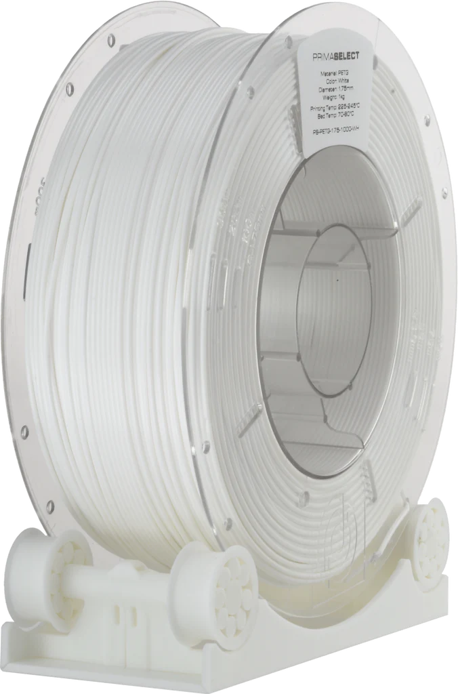

PrimaCreator PrimaValue PETG(valkoinen)
Takaisin

PrimaCreatorin PrimaValue PETG on hyvä perus-PETG helppoon tulostamiseen.
Suositeltava tulostuslämpötila on 225-245°C ja pedille 70-80°C.
Rullassa 1Kg eli noin 231m filamenttia.